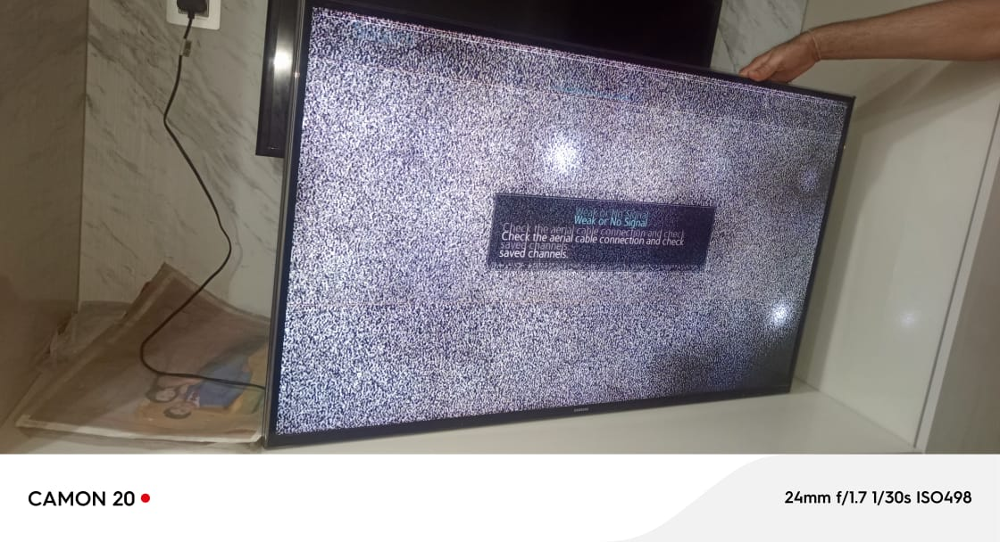
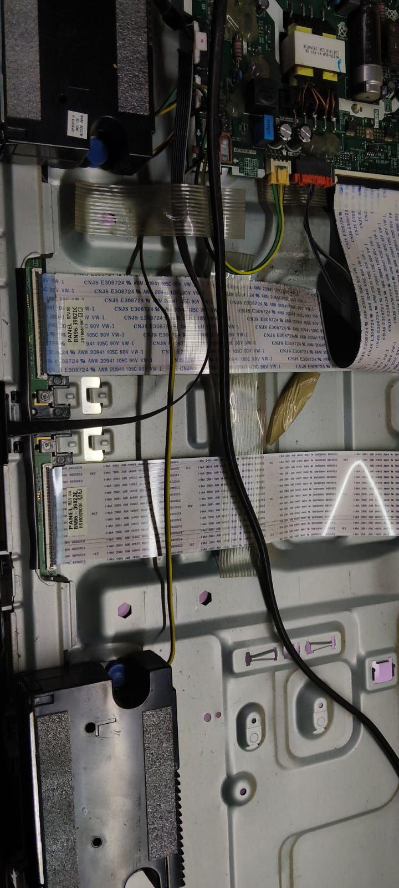
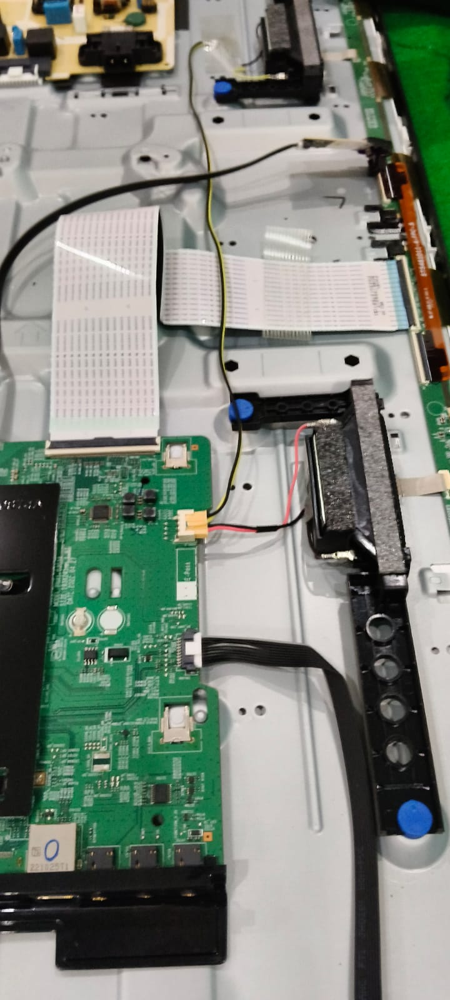
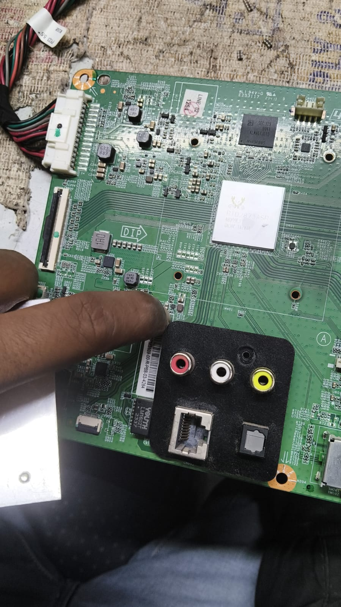

Tell us what’s wrong
Call or message with your TV make, model and the issue you’re seeing.
MEHRAULI · NEW DELHI
LED & LCD TV
Repair Specialists
Thoughtful diagnosis. Dependable repairs. Bringing your screen back to life with 16+ years of hands-on experience.
When your television stops working, you want clear answers and careful work. At V.K Electronics, we take the time to understand the problem, explain what we find, and help you choose the right next step.
A little about usWHAT WE WORK ON
 CARE IN EVERY DETAIL — MEHRAULI
CARE IN EVERY DETAIL — MEHRAULI
THE V.K. DIFFERENCE
From a flickering picture to a TV that will not power on, the symptoms are only the beginning. We take a considered, repair-first approach to finding the cause and explaining your options.
A CLEAR WAY FORWARD
Call or message with your TV make, model and the issue you’re seeing.
We discuss the symptoms and work out the best way to inspect your TV.
After diagnosis, we explain the issue and the repair options before work begins.
We complete the agreed repair with care and check the result with you.
THE WORK, UP CLOSE
A glimpse into the tools, technology
and thoughtful work behind a repair.


Illustrative imagery.
FROM THE REPAIR BENCH
Client-provided photographs of television faults and internal components being inspected.




CLOSE TO HOME
Our repair center is in Mehrauli, and we serve customers across South Delhi and the wider Delhi NCR area. Call us to discuss service availability in your neighbourhood.
Find our shopMehrauli, Vasant Kunj, Chhatarpur, Saket, Malviya Nagar, Lado Sarai, Rajpur
Katwaria Sarai, Neb Sarai, GK1, GK2, Kalkaji, Mahipalpur, Masoodpur, Munirka, Vasant Vihar, JNU Campus
Delhi, Gurugram, Faridabad, Ghaziabad, Noida & Greater Noida
LET’S GET YOUR TV LOOKING RIGHT
Speak with V.K Electronics about your television issue. We’re ready to help you figure out what comes next.